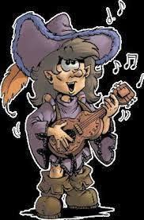

Barde
Numéro de téléphone : ** ** ** ** **
30 ans

Dévenir un barde célèbre
Aventurier durant 3 ans
Crochetage de serrure
Jouer du luth
Diplomatie
Commun natale
Elfique professionel
Gobelin scolaire
Jouer de la musique
Voyager